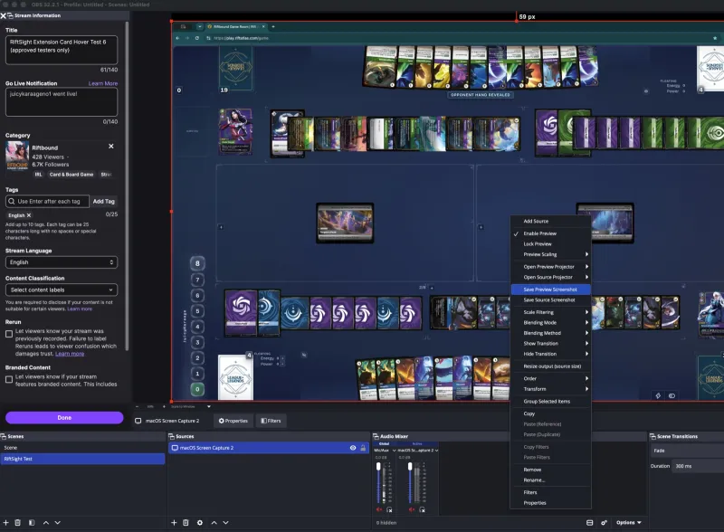

Set up RiftSight
RiftSight is currently in beta. Viewer access is open on supported streams, while streamer access is being rolled out gradually as we monitor reliability. Setup only takes a few minutes.
During the beta we onboard streamers in small batches. Request access below and we'll be in touch — then follow the setup steps on this page.
Follow the full setup in about 2 minutes.
Prefer written instructions? Follow the steps below.
Install and configure RiftSight
No coding, terminal, or technical knowledge required — just your browser.
Install the RiftSight browser extension
Open the RiftSight listing on the Chrome Web Store, click Add to Chrome, and confirm. A purple RiftSight icon appears in your toolbar — pin it so it’s always visible.
Add to ChromeConnect your Twitch account
Click the RiftSight icon and choose Connect Twitch. Authorize RiftSight in the tab that opens, then return to the panel — it should read Connected as your Twitch username. Your password stays with Twitch.
Open Rift Atlas and start publishing
Open Rift Atlas as usual. Click the RiftSight icon — it reads Rift Atlas detected once you’re in a game. Click Start publishing; a green dot on the icon confirms it’s live. RiftSight remembers this and keeps working in the background whenever Rift Atlas is open.
Turn on RiftSight on your Twitch channel
A one-time step on Twitch’s side: open your Creator Dashboard → Extensions → My Extensions, activate RiftSight, and assign it to a Video Overlay slot.
Configure the overlay
From the same Extensions area, open RiftSight’s Configure page (the gear icon). It’s a short, three-part setup:
- Where Rift Atlas appears — pick Full screen, choose a preset, or drag the box to match your layout. Drop in an OBS screenshot to line it up by eye (it’s never uploaded).
- Stream delay — match your broadcast delay (None / 2s / 5s / 10s / custom). Not sure? Start with None and adjust later.
- Card popup size — Smaller / Default / Larger, with a live preview of the exact size viewers see.
Advanced settings are collapsed by default — most streamers never need to open them.
Go live and check it’s working
Start your stream as normal. From a separate device or account, open your channel and hover over a visible card — the full art should pop up. That’s it: visible cards sync to viewers automatically, and hidden information is never exposed.
What the RiftSight icon is telling you
A small colored dot on the toolbar icon shows the status at a glance.
Common questions
Do I need to click “Start publishing” every time I stream?
No. Once you’ve clicked it, RiftSight remembers. It survives closing Rift Atlas, reloading, and restarting your browser. It pauses when you’re not in a game and resumes automatically when you are.
Do my viewers need to install anything?
No. Only you (the streamer) install the browser extension. Viewers just switch on the RiftSight overlay on your channel. Twitch handles the rest for them.
Which browsers work?
For the streamer: Chrome or another Chromium browser (Edge, Brave).
For the viewer: Any browser Twitch supports. No install required.
How do I get an OBS screenshot (for the Configure step)?
In OBS, right-click inside the Preview canvas and choose Save Preview Screenshot — not “Save Source Screenshot”, which only grabs the Rift Atlas capture by itself and skips any webcam, chat box, or overlays layered around it. Save Preview Screenshot writes a PNG of your full composited canvas, exactly matching your stream output pixel-for-pixel — perfect for aligning the box in step 5.

Something looks wrong, or a card isn’t showing correctly.
Reach out in our Discord with as much detail as you can — which card, what you expected versus what you saw, and roughly when it happened.
Stuck on a step?
Something not working, or a step looks different for you? Ask in our Discord — we help streamers get set up and sort out issues fast. Prefer the technical reference? The full docs live on GitHub.
Get help on Discord